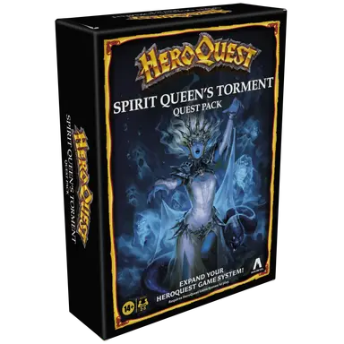

HeroQuest: Spirit Queen's Torment
"HeroQuest: Spirit Queen's Torment" is an expansion for the classic board game HeroQuest. This expansion adds new adventures and more monsters to the original game. The elven sage Silvana, brilliant diviner and ally of Mentor, has been experiencing visions of spirits surrounding her beloved late apprentice, Nelath, a Spirit Talker slain by Zargon.
The expansion includes 14 new quests and additional miniatures. Players can take on the role of a bard.
This expansion is designed to be used in conjunction with the original HeroQuest game, and players will need the core box to fully enjoy the new content and features introduced in "Spirit Queen's Torment."
Contents
The "HeroQuest: Spirit Queen's Torment" expansion includes the following components:
-
Quest Book: A 14-part quest book featuring the campaign to
end whatever vile plot has disturbed Nelath's eternal slumber.
Link: HeroQuest: Spirit Queen's Torment Quest Book -
Miniatures: 15 plastic figures, including:
- 1 Orc Bard
- 2 Orcs
- 2 Goblins
- 1 Dread Warrior
- 1 Dread Sorcerer
- 2 Mummies
- 2 Zombies
- 2 Skeleton Warriors
- 2 Abominations
-
Cards: 15 Game Cards, including:
- Five Bard cards
- Six Artifact cards - 3 Spell scrolls, 3 Artifacts
- Four Equipment cards - Potions